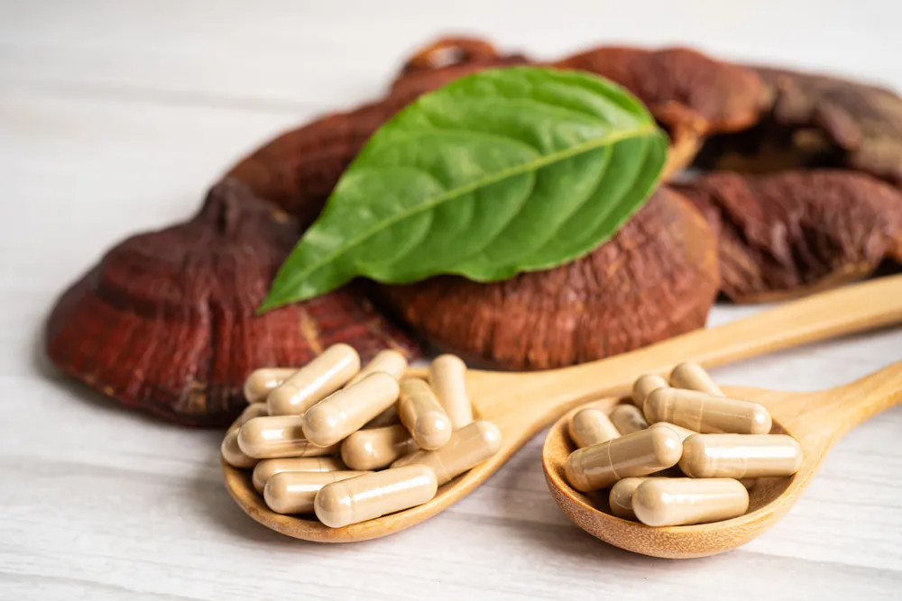
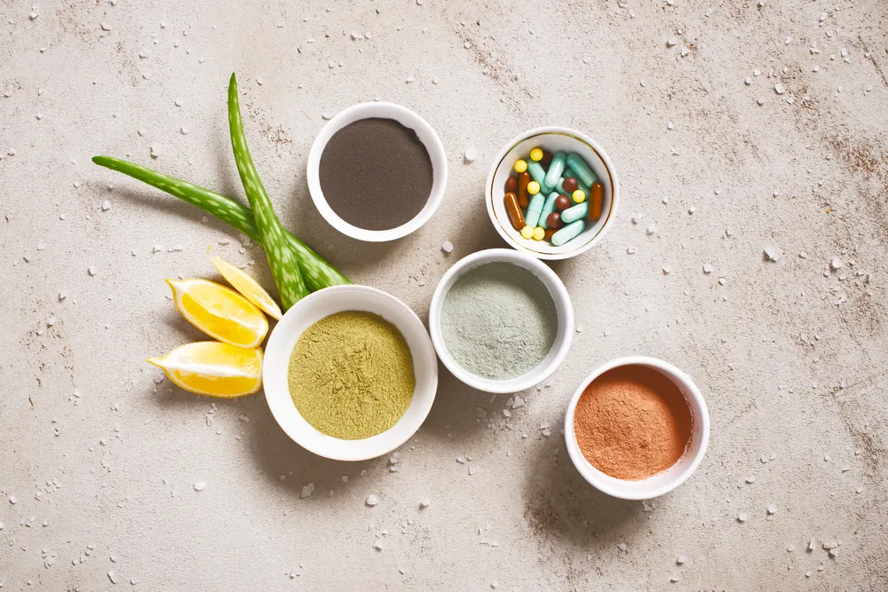

Probably you have heard somebody talking about the sheep placenta and youthful skin, or supplements that enhance energy. In the beginning, it may appear as another wellness buzzword—but in Malaysia, it is soon becoming a go-to for individuals who wish to do better in how they care about their body both internally and externally.
It is not an accident that the interest in sheep placenta Malaysia products is on the rise. Lots of people are resolving to this natural solution, calling on its anti-ageing properties and its general good health effects. And frankly, once you get into what it actually does, that is a simple reason to understand why.
Why Sheep Placenta Isn’t Just Hype
The wellness market is full of supplements that make grand promises but deliver little. The sheep placenta stands apart. It’s rich in bioactive amino acids, peptides, proteins, and growth factors — compounds your body naturally uses for cell repair and regeneration. More importantly, these bioactive elements help to stimulate your body’s self-healing mechanisms, keeping you youthful and resilient as you age.
As a person, I consider it more than a new cosmetic remedy. Placenta extracts can stimulate collagen synthesis in the skin, helping to reduce wrinkles and maintain a youthful appearance. And this is why it is, in fact, called a rejuvenation supplement by many people, since it does not hold on to the superficial change.

Why It’s Gaining Popularity in Malaysia
When one is residing in Malaysia, one is living in hot and humid weather most of the year. Our skin has to endure a lot of sun, dryness, stress, etc., and most individuals are seeking something that works more than moisturisers and serums.
This is also influenced by the increasing wellness culture. We are giving more attention to what we feed our bodies. Malaysians are moving away from the rat race of chasing quick fixes for beauty and well-being. Instead, they are embracing long-term solutions—such as sheep placenta supplements in Malaysia, which combine natural benefits with modern wellness science.
It is moreover to go back to nature, which is a reassuring thing to do. Traditional remedies are already a big part of our culture, and sheep placenta feels like a modern version of that—blending science with something nature-made.
Here’s What It Can Do for You
1. Slows Down Ageing from Within
Time cannot be halted, but the sheep placenta in Malaysia is an efficient supplement to combat ageing as it contributes to the renewal of cells and promotes the production of collagen. And that equates to younger-looking skin, reduced fine lines and a more radiant complexion.
2. Boosts Energy Naturally
It does not provide you with a temporary high as with either caffeine or sugar. It is a genuine rejuvenation supplement because sheep placenta extract works at a deeper level, helping your body produce and store more energy by replenishing your liver’s fuel reserves. It also reduces fatigue by clearing away the byproducts that make muscles feel tired, like lactic acid.
At the same time, it protects your cells’ energy powerhouses—the mitochondria—from damage and lowers inflammation throughout your body. Supporting hormone balance through the pituitary gland can even improve sleep quality, leaving you feeling refreshed, revitalised, and naturally energetic every day.
3. Boosts Your Immune System
The nutrients contained will help boost the body’s defences. Not likely to change overnight, but in the words of many people, they feel that they fall ill less frequently or recover more quickly after feeling worn out.
4. Skin Stays Bright and Hydrated
With our climate, this one’s a game-changer. Sheep placenta extracts help our skin stay bright by promoting rapid cell turnover, replacing old, dull skin cells with new ones, and reducing the appearance of pigmentation.
It also keeps our skin hydrated through its natural hydrating properties. Furthermore, its rich composition of vitamins, peptides, growth factors and antioxidants nourishes the skin, protects it from environmental damage and stimulates collagen production.
Experience Youthful Energy with Zell-V Sheep Placenta Premium!What Should You Look For?
Not all sheep placenta products are created equal. When choosing one, it’s important to consider its source and the way it is processed. High-quality products undergo advanced cold-processing techniques that preserve a greater concentration of active ingredients. Always look for quality certifications—especially from New Zealand or Switzerland—renowned for their premium sheep farms and strict safety standards.
Avoid products with fillers or harsh preservatives. Instead, choose a supplement that your body can effectively absorb and utilise for maximum benefits.
ZÉLL-V stands out by using an exclusive filtration technique developed by experts in Germany and Switzerland. This process carefully removes inactive cells, blood, and hormones, while preserving essential growth and transfer factors that support cellular rejuvenation. The active cellular materials are sourced from premium New Zealand sheep raised in pristine environments under advanced breeding protocols, ensuring purity, safety, and minimised risks of infection or disease.

Wellness That Goes Beyond Skin
Sheep placenta is, at the very basic minimum, not really about skin. It is actually the way you feel your energies, the way you feel your confidence, and the way you feel overall healthy.
Thus, the reason that so many people consider it a part of a larger wellness journey is because of this. It is perfectly natural when you are an individual who believes in the power of natural healing or even aspires to go to a peaceful, holistic wellness retreat once in a lifetime. Just imagine it as a reboot of your body, in other words.
So, Why ZÉLL-V?
It’s simple. If you’re going to invest in your health, you want to trust where your supplements are coming from. ZÉLL-V isn’t just another name on the shelf. They focus on high-purity, clinically backed formulations that work with your body—not against it.
Whether you’re just getting started with sheep placenta Malaysia supplements or looking to upgrade to something better, ZÉLL-V offers a standard of quality and trust that’s hard to match. If you’re serious about looking and feeling your best, this is a choice you won’t regret.
This article is for general information only and is not a substitute for professional medical advice. Please consult your doctor before starting any supplement, especially if you are pregnant, nursing, taking medication or have a medical condition.